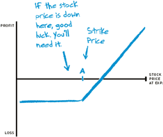

Getting your feet wet
Without getting in up to your you-know-what
Option trading is more complicated than trading stock. And for a first-timer, it can be a little intimidating. That’s why many investors decide to begin trading options by buying short-term calls. Especially out-of-the-money calls (strike price above the stock price), since they seem to follow a familiar pattern: buy low, sell high.
Educational videos and webinars
Just getting started? Watch our first-class video content in the comfort of your home. Go »
JOIN TRADEKING AND GET $1,000 IN FREE TRADE COMMISSION!
Trade commission free when you fund a new account with $5,000 or more. Use promo code FREE1000.† Take advantage of low costs, highly rated service and award-winning platform. Get started today!
But for most investors, buying out-of-the-money short-term calls is probably not the best way to start trading options. Let’s look at an example of why.
Imagine you’re bullish on stock XYZ, trading at $50. As a beginning option trader, you might be tempted to buy calls 30 days from expiration with a strike price of $55, at a cost of $0.15, or $15 per contract. Why? Because you can buy a lot of them. Let’s do the math. (And remember, one option contract usually equals 100 shares.)
Call option risk profile
When you buy a call option with a strike price of $55 at a cost of $0.15, and the stock currently trading at $50, you need the stock price to rise $5.15 before your options expire in order to break even. That’s a pretty significant rise in a short time. And that kind of move can be very difficult to predict.
Purchasing 100 shares of XYZ at $50 would cost $5000. But for the same $5000, you could buy 333 contracts of $55 calls, and control 33,300 shares. Holy smokes.
Imagine XYZ hits $56 within the next 30 days, and the $55 call trades at $1.05 just prior to expiration. You’d make $29,921.10 in a month ($34,965 sale price minus $4,995 initially paid minus $48.90 TradeKing commissions). At first glance, that kind of leverage is very attractive indeed.
All that glitters isn't a golden options trade
One of the problems with short-term, out-of-the-money calls is that you not only have to be right about the direction the stock moves, but you also have to be right about the timing. That ratchets up the degree of difficulty.
Furthermore, to make a profit, the stock doesn’t merely need to go past the strike price within a predetermined period of time. It needs to go past the strike price plus the cost of the option. In the case of the $55 call on stock XYZ, you’d need the stock to reach $55.15 within 30 days just to break even. And that doesn’t even factor in commissions or taxes.
In essence, you’re asking the stock to move more than 10% in less than a month. How many stocks are likely to do that? The answer you’re looking for is, “Not many.” In all probability, the stock won’t reach the strike price, and the options will expire worthless. So in order to make money on an out-of-the-money call, you either need to outwit the market, or get plain lucky.
Being close means no cigar
Imagine the stock rose to $54 during the 30 days of your option’s lifetime. You were right about the direction the stock moved. But since you were wrong about how far it would go within a specific time frame, you’d lose your entire investment.
If you’d simply bought 100 shares of XYZ at $50, you’d be up $400 (minus TradeKing commission of $4.95). Even if your forecast was wrong and XYZ went down in price, it would most likely still be worth a significant portion of your initial investment. So the moral of the story is:
Don’t get suckered in by the leverage you get from buying boatloads of short-term, out-of-the-money calls.
Hey, don't get us wrong
On the other hand, don’t get the false impression that you should avoid calls altogether — this site outlines several ways to use them. In fact, this section alone includes three plays for beginners to get their feet wet, and two of them do involve calls.
These strategies are:
- writing covered calls
- buying LEAPS calls (long-term options) as a stock substitute
- selling puts on a stock you want to buy.
The reason we chose these strategies is because they’re designed to enhance your stock portfolio. For now, rookies should aim for a balance between trading stocks and using options when you feel it’s appropriate.
Start Trading Options for $4.95 + 65¢ per Contract
Today's Trader Network
|
All-Star Trade Report |
Options Guy Blog |
Videos, webinars and more |